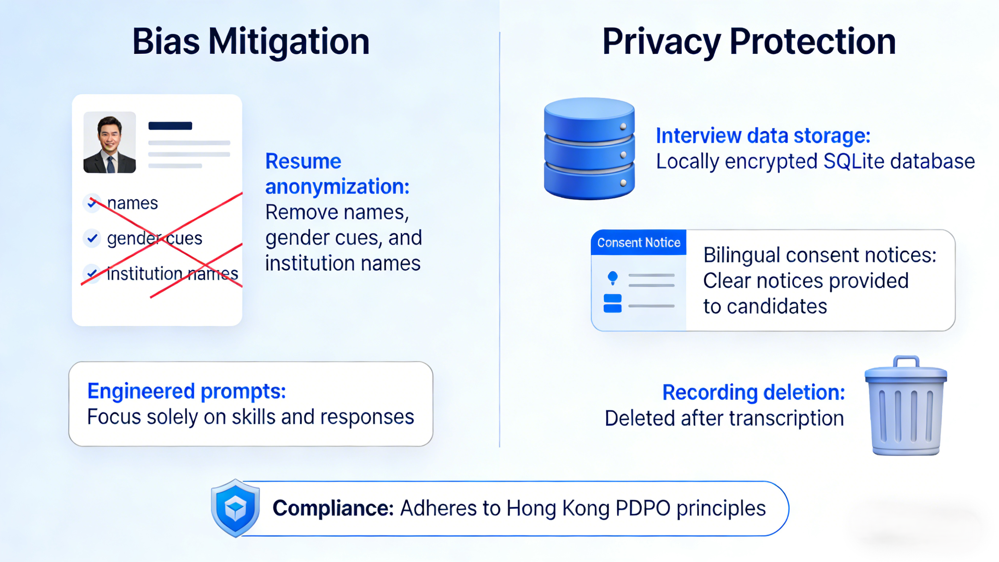
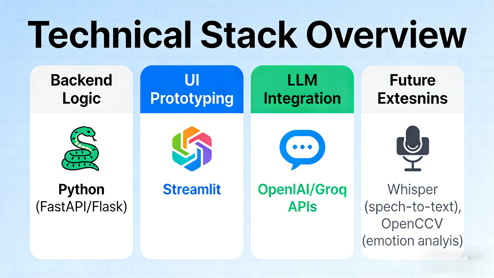
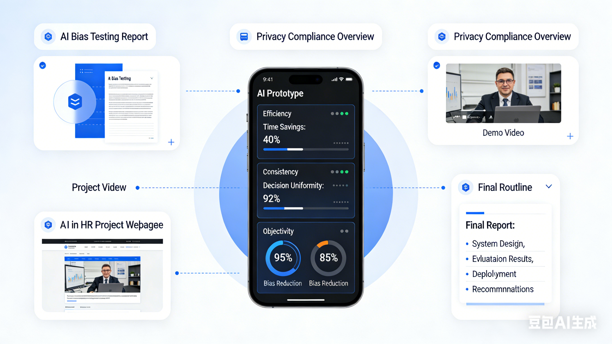

Project Information
Project Title: AI-Powered Virtual Interviewer for Technical & Behavioral Screening
Overview
The global AI recruitment market is expanding rapidly, with companies like Amazon using AI to handle 60–70% of initial applicant interactions. In Hong Kong, HR teams face talent shortages and increasing application volumes, creating an urgent need for efficient, fair, and scalable screening solutions. This project develops an innovative AI-powered virtual interviewer that automates the early-stage screening process for both technical and behavioral roles.
Main Page Details
Objectives
- Build an interactive web-based interviewer using Python, Streamlit, and large language model APIs (e.g., GPT-4o).
- Generate adaptive, role-specific questions—including code challenges for technical roles and STAR-method probes for behavioral roles.
- Automatically score candidate responses on relevance, technical depth, communication clarity, and cultural alignment.
- Deliver a shortlist with detailed reports to HR teams, reducing screening time by an estimated 50–80%.


Addressing Key Challenges
Bias Mitigation: The system anonymizes resumes (removing names, gender cues, and institution names) and uses carefully engineered prompts to focus solely on skills and responses.
Privacy Protection: All interview data is stored locally in an encrypted SQLite database; candidates receive clear bilingual consent notices, and recordings are deleted after transcription, complying with Hong Kong’s PDPO principles.

Technical Stack
- Python (FastAPI/Flask) for backend logic
- Streamlit for rapid UI prototyping
- OpenAI/Groq APIs for LLM-based conversation and scoring
- Optional: Whisper for speech-to-text, OpenCV for emotion analysis (future extension)
Expected Outcomes
A fully functional prototype that demonstrates tangible benefits in efficiency, consistency, and objectivity. The project will also produce a bias-testing report and a privacy compliance overview, contributing to the responsible adoption of AI in HR. By the end of the semester, the team will deliver a demo video, a project webpage, and a final report detailing system design, evaluation results, and recommendations for real-world deployment.
